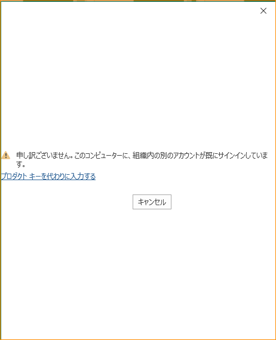
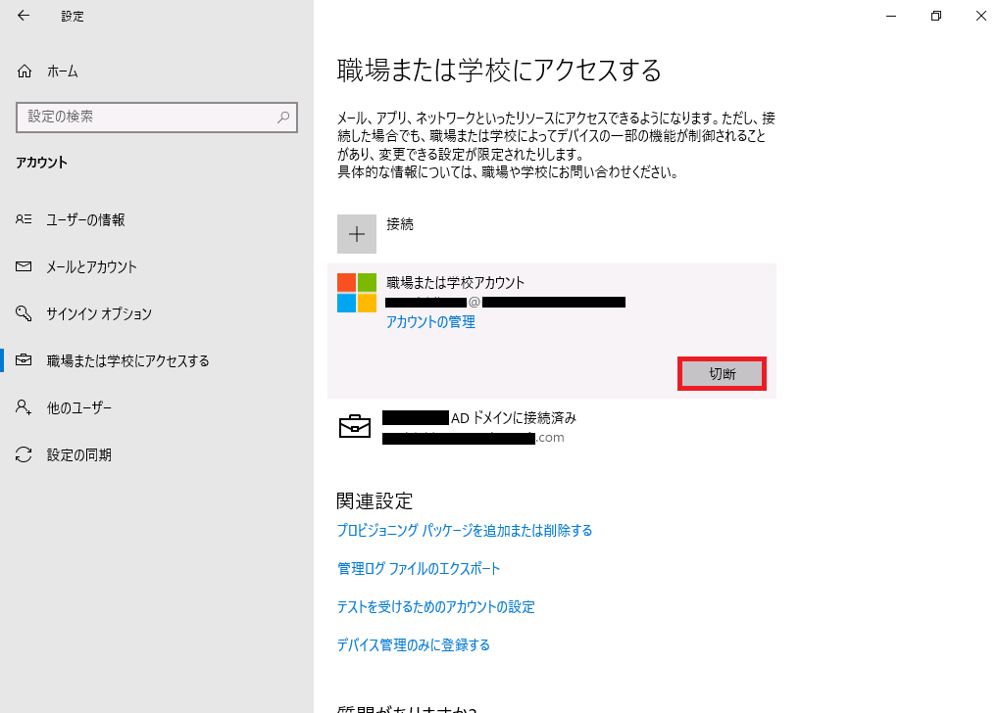
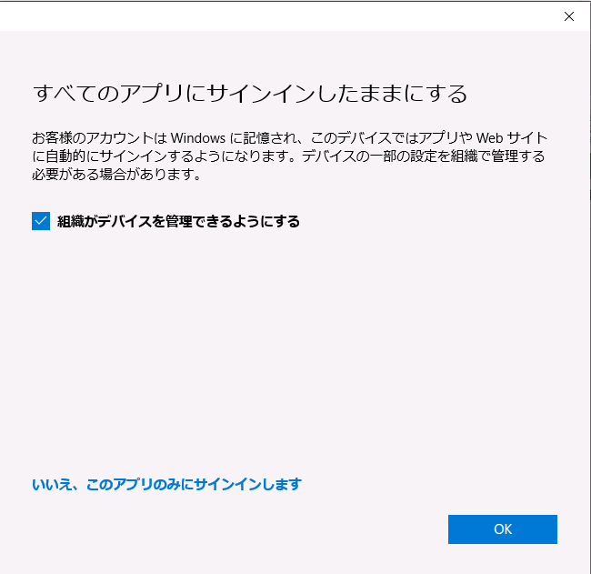

こんにちは、Office サポートの西川 (直) です。
Office 製品のサインイン時に以下のようなエラーが表示されるとお問い合わせいただくことがございます。

【事象について】
以下の公開情報のとおり、組織内の別のアカウントが既に Office にサインインしているために発生してます。
Title : “申し訳ございません。組織の別のアカウントが、このコンピューターで既にサインインしています” という Office 2013 があります。
URL : https://docs.microsoft.com/ja-jp/office/troubleshoot/office-suite-issues/another-account-already-signed-in
※ Office 2013 と記載されておりますが、Microsoft 365 Apps for Enterprise も対象となります。
【解消方法について】
以下の手順で事象が解消されるかをご確認いただきますようお願いいたします。
- 手順
1. Office にサインインしているユーザーをすべてサインアウトし、Office を終了してください。
2. OS のスタートメニュー - 歯車 - “アカウント” - “職場または学校にアクセスする” をクリックし、”職場または学校アカウント” として表示されている項目がある場合、”切断” をクリックします
※ Azure AD や AD に接続済みの項目を “切断” しますと、ドメインから外れてしまいますので、Azure AD や AD に接続済み の項目は切断しないようにご注意ください。

3. Office を起動し、サインインをご実施ください
なお、”職場または学校にアクセスする” のアカウントは、Office のサインイン時に “すべてのアプリにサインインしたままにする” の旨のダイアログで、”このアプリのみ” を選択せず、そのまま OK をクリックした場合に追加されます。

※ このダイアログの文言は OS のバージョンによって変わる場合がございます。
“職場または学校にアクセスする” にアカウントが追加されると、Office のサインインや Office 365 ポータルへのアクセス等でパスワードが求められなくなる等の利点がございますが、
共用の端末の場合等でこのアカウントの追加が必要ございません場合、今後、以下の対応をご検討いただけますと幸いです。
方法 1) “すべてのアプリにサインインしたままにする” の旨のダイアログで、”このアプリのみ” を選択する
方法 2) 以下の BlockAADWorkplaceJoin レジストリを設定し、”すべてのアプリにサインインしたままにする” の旨のダイアログを表示させないようにする。
Title : Azure Active Directory デバイス管理の FAQ
URL : https://docs.microsoft.com/ja-jp/azure/active-directory/devices/faq
-—- 抜粋開始 —–
HKLM\SOFTWARE\Policies\Microsoft\Windows\WorkplaceJoin, “BlockAADWorkplaceJoin”=dword:00000001
-—- 抜粋終了 —–
今回の投稿は以上です。
本情報の内容 (添付文書、リンク先などを含む) は、作成日時点でのものであり、予告なく変更される場合があります。